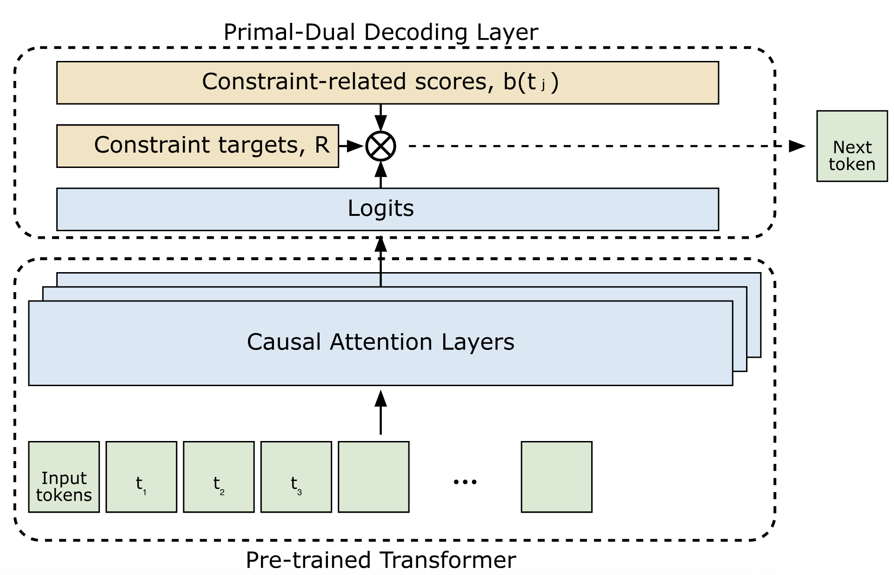
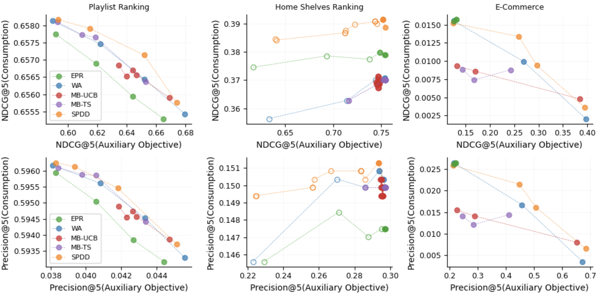
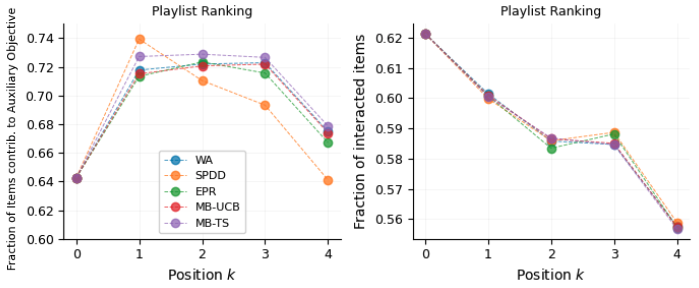
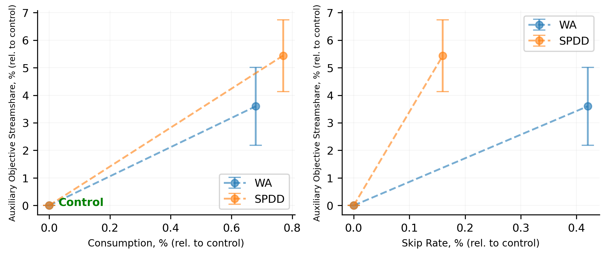

做生成式推荐、又要满足各种业务配额（某类内容的占比、新内容曝光、品类覆盖）的团队值得读。它解决的是一个很常见的问题：模型只按相关性训练，业务却要求一张推荐列表里某类内容达到一定比例，而且这些要求经常变，不可能每变一次就重训大模型。核心思想一句话：SPDD（Stochastic Primal-Dual Decoder，随机原始—对偶解码器）让模型每生成一个位置，都把“相关性分数 + 权重 × 这条内容对配额的贡献”当作选择依据，权重随“配额还差多少”自动升降，差得多就加大，完成得超前就减小。几个关键数字：Spotify 约 100 万用户的线上实验里，扶持内容的收听占比相对对照组提升 5.44%，固定权重做法只有 3.60%；跳过率分别上升 0.16% 和 0.42%，也就是说 SPDD 的副作用更小。离线在三个领域、三种模型上，它的取舍曲线几乎处处在所有基线之上。
它到底在解决什么问题？
先看一个示意场景。一个音乐平台用 SASRec 这类自回归模型给用户生成 10 首歌的播放列表：模型看用户的收听历史，选出第 1 首，把它接到输入后面，再选第 2 首，依次类推。平台另有一个要求：每张列表里至少要有 3 首来自某个需要扶持的曲目集合。论文出于保密没有说这个集合是什么，可以想成新人歌手或本地音乐。
常见做法有两类，各有问题。
| 做法 | 怎么做 | 问题 |
|---|---|---|
| 生成后重排 | 先按相关性生成整张列表，再把相关性和“是不是扶持曲目”加权排序 | 自回归模型里，第 3 首选谁会改变第 4 首的分数，事后重排拿的是旧分数 |
| 解码时固定加权 | 每一步都用“相关性 + 固定权重 × 扶持标记”选歌 | 不管前面已经放了几首，权重都一样，常常前面已经够了还在硬塞 |
| 把目标写进训练 | 训练时加入配额相关的损失或条件 | 配额、曲目集合一变就要重训，大规模系统里不现实 |
作者的观察是：合适的权重取决于已经完成了多少。前几首没放扶持曲目，后面就要更积极；已经放够了，就应该把位置还给相关性最高的歌。所以权重应该随生成过程变化，而不是一个定值，这就是 SPDD 的出发点。
先看全景

整个流程只在推理时运行：
| 步骤 | 做什么 | 产出 |
|---|---|---|
| 0. 准备 | 给每个候选标一个贡献值 b（扶持曲目为 1，其他为 0），设定整张列表的目标 R | 每个候选的 b，目标 R |
| 1. 打分 | 底层模型照常算每个候选的相关性 p | 当前位置的相关性分数 |
| 2. 合分选择 | 每个候选的得分 = p + λ × b，选最高的 | 这个位置放谁 |
| 3. 更新权重 | 看这一步的贡献比平均需要的 R/K 多还是少，相应调小或调大 λ | 下一步用的 λ |
| 4. 循环 | 重复 1–3，直到填满 K 个位置 | 整张列表 |
关键分工是：底层模型只负责相关性，配额完全由解码层里一个随进度变化的权重来管。下面拆开讲这个权重怎么变、为什么这样变。
权重怎么随“还差多少”变化
λ 在优化里叫拉格朗日乘子，可以理解成“完成配额这件事眼下值多少相关性”。每一步选歌的规则是：
是模型在已经选了前 k−1 首的条件下给候选 的相关性， 是它对配额的贡献， 是当前权重。λ 大，扶持曲目更容易被选中；λ 小，基本按相关性选。
选完以后更新 λ：
R/K 是把整张列表的目标平摊到每个位置后的份额，比如 10 首里要 3 首，意味着每个位置平均要贡献 0.3。这一步选中的歌贡献高于这个份额，指数是负的，λ 变小；低于份额，λ 变大。η 是步长，决定 λ 反应多快。作者推导这个更新用的是镜像下降（mirror descent，一种保证变量始终为正、按乘法更新的在线优化方法），初值 λ₀=1。
用一个能手算的例子看看（全部是示意数字，并假设相关性在几步之间不变）：K=10，R=3，η=1。当前最相关的普通曲目 p=0.30，最相关的扶持曲目 p=0.12。
| 第几步 | λ | 扶持曲目得分 | 普通曲目得分 | 选中 | 更新后 λ |
|---|---|---|---|---|---|
| 1 | 1.00 | 0.12+1.00=1.12 | 0.30 | 扶持 | e^(−0.7)≈0.50 |
| 2 | 0.50 | 0.62 | 0.30 | 扶持 | e^(−1.4)≈0.25 |
| 3 | 0.25 | 0.37 | 0.30 | 扶持 | e^(−2.1)≈0.12 |
| 4 | 0.12 | 0.24 | 0.30 | 普通 | e^(−1.8)≈0.17 |
前三步配额补得很快，λ 从 1 降到 0.12，第 4 步就让位给相关性更高的普通曲目。之后每放一首普通曲目，累计盈余就少 0.3，λ 又慢慢回升。这说明 SPDD 管的其实是“到第 k 个位置为止，累计贡献是否跟上了 k×R/K”，而不是“凑够 3 首就停”。
这个例子也说明分数尺度很重要。如果 p 是在几百万首歌上归一化的概率，单个候选的 p 往往远小于 1，而 λ₀=1 时扶持曲目一上来就多 1 分，前几步几乎一定选扶持曲目。论文的公式里写的是概率 p，架构图里写的却是 logits，两者尺度差很多，论文没有讨论 b 和 p 的尺度怎么配、λ 初值怎么定。
一个类比：广告预算的平滑投放
做过广告系统的人对这个机制不会陌生。广告投放里常见“预算平滑”（pacing）：一天的预算平摊到每个时段，花得比计划慢就提高出价，花得比计划快就压低出价，用一个随进度更新的乘子控制节奏。SPDD 把同一套做法搬到了一张推荐列表的生成里：
| 广告预算平滑 | SPDD |
|---|---|
| 一天的总预算 | 整张列表的配额目标 R |
| 每个时段的计划花费 | 每个位置平均要贡献的 R/K |
| 出价调节乘子 | λ |
| 某时段实际花费 | 这一步选中曲目的贡献 b |
| 花慢了提价、花快了降价 | 贡献低于 R/K 就加大 λ，高于就减小 |
论文引用的正是在线分配和 pacing 方向的工作，算法也基本同源。这个类比也解释了为什么它的复杂度对列表长度 K 和候选数 M 都是线性的：每一步只多算一次加法和一次指数。
理论保证说了什么
作者给了两个上界。配额违背量的上界大约和 1/η 成正比，也就是 η 越大，越能保证完成配额。遗憾（和事后最优分配相比少拿的相关性）的上界里有 1/η 和 ηK 两项，η 太大，相关性损失也会变大。所以 η 是一个明确的旋钮：配额要求高就调大，要求低就调小。
为了能证明，作者假设每选一首歌，其他候选的相关性只做均值为零的小幅高斯扰动。真实的自回归模型里，选了一首摇滚，下一首摇滚的分数可能系统性上升，这个假设不一定成立，所以这些界更适合当作调参方向的参考，不是严格保证。
实验：效果到底有多大
离线实验覆盖三个领域，每个领域用一种不同的生成模型，所有底层模型都只按相关性训练，然后在同一份模型输出上叠加不同的解码策略，这样比的只是解码层。
| 领域 | 数据 | 模型 | 配额定义 |
|---|---|---|---|
| 播放列表 | 两周、6200 万用户、4200 万曲目、约 400 亿次交互 | SASRec，约 2.5 亿参数 | 扶持曲目的收听占比 |
| 首页货架 | 一周、5 亿多次请求、53 亿次货架曝光 | TransAct | 扶持货架的曝光 |
| 电商 | 亚马逊 Sports & Outdoors，500 多万次交互、100 多万商品 | Llama-3.2-1B 微调，用 Semantic ID 表示商品 | 露营徒步和骑行两个子类，约占商品的 15% |
对比的基线有四个：生成后重排（EPR）、解码时固定加权（WA），以及两种用多臂老虎机在线学习权重的方法（MB-UCB 和 MB-TS）。每种方法调不同的目标或权重，得到一组“消费指标—配额指标”的点，连成取舍曲线。

这张图可以读出三点。第一，生成后重排在播放列表和电商上都被其他方法压住，在电商上尤其差：扶持子类只占约 15% 的商品，只按相关性生成的列表里本来就很少有它们，事后重排没东西可换。这说明在自回归生成里，配额必须在生成时就介入。第二，两种老虎机方法没有比固定权重稳定地更好，作者认为是探索成本抵消了自适应的好处。第三，SPDD 的优势在电商上最明显；在播放列表上，消费 NDCG@5 的整个变化范围只在 0.655 到 0.658 之间，各方法的差距都在小数点后第三位。
作者还按位置看了 SPDD 在做什么：

这和前面手算的例子一致：先在靠前的位置把配额补上，后面让给相关性。右图各条线几乎重合，说明这样排对每个位置的收听比例影响很小。
线上实验在 Spotify 进行，约 100 万用户、150 多个国家，重排了 60 万张个性化播放列表。三组：对照组只用 SASRec 按消费生成；一组用固定加权；一组用 SPDD。离线较弱的三种基线没有上线。
| 相对对照组 | 固定加权（WA） | SPDD |
|---|---|---|
| 扶持内容的收听占比 | +3.60% | +5.44% |
| 跳过率 | +0.42% | +0.16% |
| 收听时长（图上读数） | 约 +0.7% | 约 +0.8% |

SPDD 的扶持占比更高，跳过率涨得更少，收听时长也没有下降。摘要里“辅助目标提升 1.8% 且不损失用户满意度”，从数字看就是 5.44% 和 3.60% 之差，比较对象是固定加权，不是对照组。
我认为它的局限
第一，线上优势的统计强度不够清楚。SPDD 和固定加权的扶持占比区间（约 4.1%–6.7% 对 2.2%–5.0%）有明显重叠，论文没有给两者之间差异的显著性。而且两种做法的跳过率都比对照组高，所谓“不损失用户满意度”指的是收听时长，不是所有体验指标。
第二，离线差距很多时候非常小。播放列表上不同 η 的两条曲线，消费 NDCG@5 只在 0.65802 到 0.65820 之间变化，差在小数点后第四、五位。这能说明 η 的取舍方向，但实际意义有限。
第三，分数尺度和配额定义都是黑盒。论文没有说 b 和 p 怎么对齐尺度、λ 初值怎么选，前面的手算例子显示这会直接决定前几步的行为。配额内容出于保密做了抽象，也只演示了一个配额；多个配额同时存在、相互冲突时怎么办，作者留给了以后。
一个推荐团队可以怎么试
- 先在离线回放上把现有的固定加权替换成 SPDD。两者改动几乎一样大，只多一个 λ 的更新，用同一批日志比较取舍曲线，看在自己的业务里是否也能整体上移。
- 先定尺度再调 η。把相关性分数换算到和 b 可比的范围（例如用 softmax 后的概率乘一个常数，或直接用标准化的 logit），然后按位置画出配额内容的比例，确认没有出现“前几位全是配额内容”的情况。
- 按配额高低分别选 η。配额要求低时用小 η 减少相关性损失，要求高时用大 η 保证完成，这和论文的 η 实验结论一致。
- 上线时同时看配额完成率、收听或点击时长和跳过率，并单独检验 SPDD 相对固定加权的差异是否显著，而不只是相对对照组。
结论
一句话：配额类业务目标可以不进模型训练，在解码时用一个按进度调整的权重就能管住，而且比固定权重更省相关性。
| 维度 | 评价 |
|---|---|
| 问题重要性 | 高。内容扶持、品类覆盖、公平性约束几乎每个推荐系统都有 |
| 方法创新性 | 中。在线分配的原始—对偶方法很成熟，新在把它放进自回归解码的每一步 |
| 实验证据 | 中。三个领域、三种模型加线上实验，但线上和固定权重的区间重叠，离线差距常常很小 |
| 工程成本 | 低。不动模型，只改解码，复杂度线性 |
| 是否值得尝试 | 值得。已经在用固定权重满足配额的团队，替换成本很低 |
读完这篇，你觉得
夜读鸮记下了，谢谢你的反馈。
点一下即可，无需登录；再点一次撤回。只统计匿名次数，不记录你是谁。
讨论
欢迎补充实验细节、复现经验或不同看法。需 GitHub 登录。
正在加载讨论…